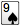
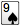

What's
New? What's
New? |
|
Version 3.1.4 - November 10, 2024
|
-
Upgrade to Java 17.
-
Incorporating updates to various software dependencies.
|
Version 3.1.3 - November 9, 2024
|
-
Upgrade to Java 11.
-
Incorporating updates to various software dependencies.
|
Version 3.1.2 - October 20, 2024
|
-
Restore handling of .ddpokerjoin files to Mac (installer fix).
-
Incorporating updates to various software dependencies.
|
Version 3.1.1 - September 8, 2024
|
|
Version 3.1 - August 30, 2024
|
-
DD Poker lives to see another day, now as open source software.
-
Added ability to specify backend servers in Options -> Online tab.
|
Version 3.0p6 - June 20, 2020
|
-
Prolonged life support. Update to Java 8, testing all-in-one.jar.
|
DD Poker Farewell - July 31, 2017
|
-
DD Poker shutdown (although the game will still work offline and for private games).
|
Version 3.0p5 - April 19, 2014 (Mac Only)
|
-
Update to workaround bug introduced by Apple's Java update to 1.6.0_65 (from 1.6.0_31).
|
Version 3.0p4 - July 23, 2011
|
-
Verify Online Activated player profiles before joining any game to prevent profile hijacking.
|
Version 3.0p3 - July 1, 2011
|
-
Added "Online Activated Players Only" tournament option to prevent impostors from joining games.
|
Version 3.0p2 - August 2, 2009 (Mac Only)
|
-
Fixed font bug introduced by Apple's Java for Mac OS X 10.5 Update 4.
|
Version 3.0p1 - February 15th, 2009
|
-
Fixed bug where multiple side pots were incorrectly calculated.
-
Linux installer now working (tested on Ubuntu 8.10 Desktop which is
running on Doug's old Mac Mini!). Opening external
websites and the "My Files" button on the Support screen now work
in Linux (as long as gnome-open is installed, which seems to be
the case for popular flavors of Linux).
-
On Windows, went back go Java 5 (from Java 6) so that Windows 98
can continue to be supported.
-
Fixed minor bug where tournament details would not display in the Join Online
screen.
-
Fixed some cases where the poker table would not draw correctly.
-
Now disallow running multiple copies of DD Poker on the same machine. This
means you can no longer run DD Poker 3 when DD Poker 2.5 is running on the same machine.
-
Fixed Leaderboard by ROI page - changing # of games or date would revert back to Leaderboard by DDR1.
|
DD Poker 3.0
- Totally Free! - January 2009
|
- Most changes were related to making DD Poker a free product (including updates
to the server and website).
- Major new feature: Ability to take a photo (aka a screenshot) of the game
using the camera icon on the poker table or using CTRL-P (windows/linux) or
CMD-P (mac).
-
DD Poker 3 now works on Windows Vista without having to run in compatability mode.
-
Updated installer and uninstaller.
-
"My Profile" and "I Forgot My Password" pages on website.
|
Free Update 15 (Version 2.5p3) - February 18th,
2007
|
- Fixed an "unexpected error" bug that occurred during a table merge and
color up.
- Returned the card shuffle back to the redundant 3X shuffle removed in the 2.5 update.
- Fixed a very minor customer requested shuffle bug.
|
Free Update 13 & 14 (Version 2.5p2) - July 11th, 2006
|
- This release fixes some bugs introduced in version 2.5.
|
Free Update 12 (Version 2.5) - July 5th,
2006
|
Mac system requirements: Mac users are
required to update to MacOS 10.4.5 (Tiger) or higher and Java 5 in order to
install free update 12 or later.
Note: Users may need to configure their
security software to allow DD Poker access on both TCP and UDP ports from 11885
to 11889. Hosts with routers will also need to port forward both TCP and UDP
ports from 11885 to 11889.
General
- Free update 12 includes all previous updates.
- Tweaked the tightness of the AI in early position.
- Added an option to also restrict observers to the invite list in invitational
games.
- Players (and all their aliases) can be added to the ban list in-game.
- Observers can be muted and/or banned by right clicking in the Observer dashboard
item.
- Split the Enable Dashboard Items host option into two separate options,
one for the advisor and the other for player aides.
- Fixed an infrequent bug preventing a user from raising and using the raise spinner.
- The computer AI online now have a one second delay before acting for play
realism and connection stability.
- Performance tuning.
User Interface
- The running games list can now be viewed and joined from within the game.
- The calculator tool, in-game help, connection status screen and online chat
lobby are now external windows.
- Added an online feature for a host to right click a player in the lobby to change them from observer to player
or vise versa.
- The player list for public games listed on online.ddpoker.com is updated
as players bust out so the list reflects actually players in-game.
- Added a link to the DD Forums in the online menu of the game.
- If a player is waiting for a seat (typically in heads-up format), that is
now displayed in several dashboard items (for extra confirmation).
- Help improvements: Rank of Hands page shows card graphics for beginners
to reference; online etiquette addition and shortcuts page.
- Added a bell to indicate an online game has started and when rebuys or add-on
popups appear.
Timer
- The player action and think bank timers are now displayed as a timer bar.
- The think bank now resets every hand and is adjustable on the fly by the
host.
- Added an option to disable player action and think bank timeout messages
in chat.
- Lowered the minimum player action timeout to 5 seconds for "speed poker" games.
Chat
- Added an online chat lobby (beta feature).
- In-game chat area between player chat and dealer messages and can be viewed
via tab or split-pane.
- Online player aliases displayed by right-clicking on a player in the lobby
and selecting "Player Information..."
- Added the ability to copy and paste chat text. (Highlight text, CTRL/Apple-C,
CTRL/Apple-V)
- Added the ability to display playing cards in the chat (for example, type
/8s9s to display a
 
).

).
- Added the ability to export the chat dialog to an HTML file (right click
chat for export menu).
New Communications
- Added an optional method for game communication using UDP instead of the
current TCP/IP (beta feature).
- Added a Connection Status Screen to view real time UDP communication data.
(CTRL/Apple-U)
|
Free Update 11 (Version 2.1p1) - April 7th,
2006
|
- Fixed an online bug introduced in free update 10 that worsened the effects of brief disconnects.
- Added Mac Intel Core compatibility.
|
Free Update 10 (Version 2.1) - April 5th,
2006
|
- Major computer AI improvements.
- New AI player personalities.
- Pre-loaded tournaments have new opponent mixes.
- Added an "Invite List" for invitation only games. This allows you to choose which players are allowed
to play in the game you host.
- Added a "Player Style" Dash item for practice games and online games when dashboard items are enabled
showing a graph of a player's tightness and aggressiveness.
- Added the ability to cut and paste online profile names in the Invite List, Banned Players List, and Muted
Players List.
- Improved the online player transition from the poker lobby to the poker table.
|
Free Update 9 (Version 2.0p9) - March 5th,
2006
|
- Improvements to the pre-flop intelligence of the computer AI making better decisions based on position and first
player in the pot.
- Faster Pre-flop computer AI game play.
- AI advisor now provides a range of multiple actions to reduce predictability.
- Expanded player ban capability. Now banning an online name from the lobby will ban all of that player's online
profiles.
|
Free Update 8 (Version 2.0p8) - February 5th,
2006
|
- Added the "Player Info" DD Dash item for online games showing player's ranks, hands disconnected and
sitting-out.
- Added rules for an online game to remove a disconnected player after a preset number of hands.
- Added rules for an online game to remove a player sitting out a preset number of hands.
- Improved the online poker lobby connectivity due to issues with players unknowingly disconnecting in the lobby.
- Fixed a minor bug preventing the game to continue with the Pause After Cards Dealt option ON.
- Added a statement to the host quit confirmation dialog concerning the etiquette of quitting a hosted game.
- Added more Leaderboard functionality with a server side code update.
|
Free Update 7 (Version 2.0p7) - January 5,
2006
|
- Fixed a minor bug introduced in free update 6 where the showdown placards displayed the wrong cards.
|
Free Update 6 (Version 2.0p6) - January 5,
2006
|
- Increased the maximum buy-in chip amount to accommodate for tournament structures with larger starting chips.
- Fixed minor bugs with rebuys in online games.
- Fixed a minor bug that occasionally caused an error in saved practice games.
- Fixed a minor bug that did not stop the think bank timer of a disconnected player when the host of an online
game clicked pause.
- Fixed auto update problems for some individuals with a server side code fix.
|
Free Update 5 (Version 2.0p5) - December 5,
2005
|
- Added a mute feature to allow users to mute all chat from an individual player if they find their chat is
annoying or offensive. When a player is muted they are automatically added to a muted player list and are muted
in all future games until removed.
- Added a banned players list. Prohibits any players you add to the list to join your hosted online games.
- Option to disable the keyboard shortcuts to avoid accidental player actions when chatting online.
|
Free Update 4 (Version 2.0p4) - October 15,
2005
|
- Big improvement with online disconnect issues.
|
Free Update 3 (Version 2.0p3) - October 10,
2005
|
- Improved online stability reducing disconnect issues.
- Faster indication of online disconnects.
- Fixed an export formatting issue that caused Poker Tracker to crash when replaying hands won before flop.
- Pause online tournament at start option now actually works.
|
Free Update 2 (Version
2.0p2) - October 5, 2005
|
- Online host feature that sends an automatic personal greeting to each player that joins their game.
- Set the maximum number of players per table (2-10).
- Export hand histories for import to other applications such as Poker Tracker.
- Your reputation precedes you. AI players in practice tournaments no longer start their modeling of your play
from scratch every time they're seated at your table.
- The host of an online game can now be an observer instead of a player.
- Added Advisor Auto Pilot to the "When It's My Turn To Act" DD Dashboard item.
- Tables are balanced for multi-table tournaments.
- Individual players no longer get moved excessively in a multi-table tournament.
- Fixed a Macintosh bug where deleting all the profiles caused an error, preventing the game to run.
- Fixed a Mac screen corruption bug caused by the Java 1.4.2_09 update.
- Fixed a minor bug where the raise symbol and sound did not happen when the ai had an option to raise on the big
blind.
|
Free Update 1 (Version
2.0p1) - September 5, 2005
|
- Online host option to enable the use of the dashboard Advisor,
odds and the Calculator Tool during online play.
- Give player names to each of the computer AI player types so each personalized
name will represent a play style.
- View the names of all the players from the join screen who are already in
an online poker lobby before you enter.
- View the names of all the players on our web
page who are in lobbies for games available and in games running.
- Accurate standings on the web of players in stopped online games.
- New shortcut key 'F1' toggles between the chat window and the action keys.
- Added an Advisor help topic.
- A few small bug fixes dealing with an action button freeze and alt-tab fixes.
|
Version
2.0 - August 5, 2005
|
Computer AI "Artificial Intelligence"
The computer AI has taken a giant leap forward.
- Many AI types and personalities like maniac, fish, and rock.
- AI Advisors with recommendations and supporting details
- Configure how each AI plays it's starting hands or how tight or aggressive it plays at different times like
heads up
- Define playing styles with over 35 traits like perception, deception and discipline
- Create and configure your own AI
Online Play
- LAN and Internet play added
- Public games or private parties
- Play a mix of human and computer opponents online
- Text chat
- Multi-table tournaments
- Spectator mode to observe others play
- Your friends can join you online with the Demo to sample the game (with
limitations)
Player Statistics
- Detailed player statistics
- Hand history tracking
Look & Feel
- DD Dashboard - A configurable information display
- Improved screen layout and navigation
- Improved use of poker chips
- Change the felt color of your table
- Larger text for the visually impaired
Poker Clock - Home Tournament Manager
- Breaks added
- Option to disable color up messages
- Option to pause at the end of every level
Support & Updates
- Ability to check for and download game updates with the click of the update button.
- Easily send log files and game information to our customer support using the support button.
Features & Options
- Over 50 configurable options and tournament settings in addition to the
35 plus AI adjustments
- Limit and Pot Limit added
- Poker simulator
- Odds calculator
- Ability to change any players cards, chip count, button position, or player
type
- Ability to change the community cards
- Auto Deal with a delay
- Four Color Deck
- Buttons to check, call, or fold before the actions gets to you
- Improved rebuy feature
- Super Satellite payout option
- Many other improvements and cheat options
DD
Poker Website